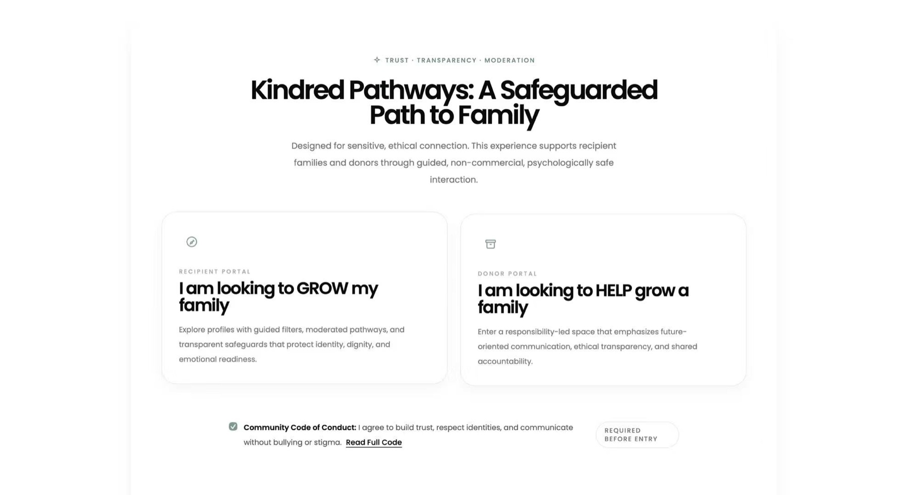

Kindred Pathways
An early donor-selection service concept that explores what recipients and donors each need to make a considered decision.
Explore the concept interface
Two participant journeys
Recipient browsing surfaces profile context and intent. A donor dashboard explores how responsibilities and expectations could stay visible after onboarding.
Designing for a sensitive decision
The interface prioritizes context, understandable next steps, and the ability to pause. This is a concept interface using sample information.